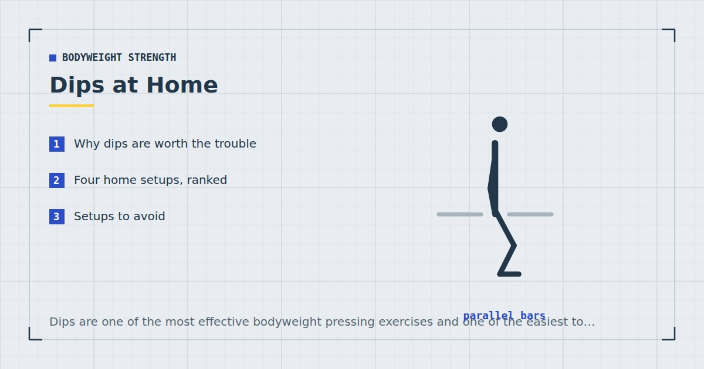

Bodyweight Strength
Dips at Home: Chairs, Counters and Safe Setups
Dips are one of the most effective bodyweight pressing exercises and one of the easiest to set up badly. The furniture you use matters more than the technique.

The dip is arguably the best bodyweight pressing exercise. It loads the chest, triceps and front shoulders through a long range with most of your bodyweight, and it requires nothing but two solid surfaces at roughly the right height.
It is also the home exercise where improvised equipment most commonly fails, sometimes with an unpleasant result. The setup deserves more attention than the technique.
Why dips are worth the trouble
Push-ups load a fraction of your bodyweight through a relatively short range. A full dip loads close to all of it through a longer one, which makes it a genuinely heavy exercise available at home.
It also trains the triceps far more directly than push-ups do, and the front deltoids get substantial work. If you can only add one pressing exercise to a routine that already has push-ups, this is it.
Four home setups, ranked
1. Two sturdy dining chairs
Best home option. Position two matching solid chairs facing each other, backs inward, at roughly shoulder width. Grip the chair backs. The height is usually close to correct and the setup is stable if the chairs are solid wood.
Test first: lean your weight onto both chair backs with your feet still on the floor. If either shifts, rocks or creaks, use something else.
2. Kitchen counter corner
Where two runs of counter meet at a right angle, you can grip both edges and dip in the corner. Very stable, since the counter is fixed. The limitation is that the range is often short and the position can be awkward.
3. Bench or bed dips (triceps dips)
Hands on the edge of a bed, sofa or chair behind you, feet out in front, lowering by bending the elbows. Much easier than a parallel dip, and consequently the version most beginners start with.
Note that this is a substantially different exercise: it is nearly all triceps and it places the shoulder in an internally rotated, extended position that some people find uncomfortable. Useful as a starting point, not as a destination.
4. Parallettes or a doorway bar set low
If you have parallettes, they are purpose-built and better than furniture. A doorway bar set low can also work for a variation on this, though not for a true dip.
Setups to avoid
- Office chairs or anything on castors. Obvious in writing, less obvious at the time.
- Lightweight or flat-pack chairs. The backs are not designed for lateral load and can snap.
- Two chairs of different heights. Uneven loading through the shoulders under close to full bodyweight.
- Anything between two surfaces you have not weight-tested. Test every time you change the setup, not just the first time.
- Stacked objects. Boxes, crates or books stacked to height are not stable under a shifting load.
The failure mode here is worse than for most home exercises: you are supporting your full bodyweight on your hands with your feet off the floor, so a collapse means falling from height onto whatever collapsed.
Technique
Support yourself on straight arms, shoulders down away from the ears rather than shrugged up. Lean the torso slightly forward — this biases the chest and is easier on the shoulders than staying bolt upright, which emphasises the triceps.
Lower under control until your upper arms are roughly parallel with the floor. Press back up without fully locking out at the top if you want to keep tension on the muscles.
Keep the elbows travelling backward rather than flaring wide. Knees bent and ankles crossed is the usual leg position and helps with balance.
The shoulder question
Dips have a mixed reputation for shoulder health, and the honest position is somewhere in the middle.
Going very deep — past the point where the upper arms are parallel with the floor — places the shoulder in an extended, internally rotated position under load, which some people tolerate poorly. There is reasonable mechanical logic to being cautious there.
What does not follow is that dips are inherently harmful. Performed to a moderate depth with a slight forward lean and progressed sensibly, they are a normal resistance exercise.
Practical guidance: stop at parallel, do not chase depth, and if you feel anything sharp at the front of the shoulder, stop. Persistent shoulder pain warrants a physiotherapist rather than a form tweak from an article.
Scaling and progression
Too hard? Start with bench dips with the feet close in, then further out. Then negatives on a full dip setup: jump or step to the top position and lower slowly over five seconds. Then partial-range dips, gradually increasing depth.
Too easy? Slow the descent to three or four seconds, add a two-second pause at the bottom, or add load with a rucksack — see DIY home gym equipment. Weighted dips are one of the more effective upper-body exercises available anywhere.
Since bodyweight load is fixed, proximity to failure is the main intensity lever, and evidence suggests light loads taken close to failure produce comparable adaptation to heavy ones.1
Programming
Two or three sets of eight to fifteen, twice a week, as a secondary pressing exercise after push-ups. Weekly volume drives adaptation,2 and dips contribute to chest, triceps and front-deltoid totals simultaneously.
Because they load the front of the body heavily, balance them with pulling work — see rows at home. They fit naturally into upper-body day of the three-day split.
Dips versus push-ups: which and when
These are not interchangeable, and running both is better than choosing between them.
A push-up loads roughly sixty to seventy per cent of your bodyweight through a moderate range, with the chest working hardest at the bottom and the shoulder in a relatively neutral position. A dip loads close to your full bodyweight through a longer range, with far more triceps involvement and the shoulder in a more demanding position at depth.
Practically, that means push-ups are the safer high-volume exercise and dips are the heavier one. A sensible arrangement is push-ups as the primary pressing movement with three or four sets, and dips as the secondary with two or three — which is exactly how they are ordered on upper-body day in the three-day split.
If you are still working toward a full floor push-up, leave dips alone entirely for now. They are a considerably heavier exercise, and attempting them before you can control your bodyweight in a push-up is the most reliable route to the shoulder irritation described above. Build the base first with the push-up progression ladder, and come back to dips once floor push-ups are comfortable.
Where to go next
For the chest progression ladder more broadly, see how to build chest muscle without weights. For overhead pressing, see the bodyweight shoulder workout.
Frequently asked questions
How can I do dips at home without a dip station?
Two matching sturdy dining chairs facing each other with the backs inward is the best home setup. A kitchen counter corner also works well and is very stable. Bench dips off a bed or sofa are the easiest starting version.
Are chair dips safe?
Only with the right chairs. Use solid, matching chairs with no castors, and test the setup by leaning your weight on them with your feet still on the floor before committing. Lightweight and flat-pack chairs are not suitable — their backs are not designed for lateral load.
Are dips bad for your shoulders?
Not inherently. Going very deep, past the point where the upper arms are parallel with the floor, places the shoulder in a position some people tolerate poorly. Stopping at parallel with a slight forward torso lean is the sensible approach.
What muscles do dips work?
Chest, triceps and front deltoids. A more upright torso emphasises the triceps; a slight forward lean emphasises the chest and is generally easier on the shoulders.
How do I make dips easier as a beginner?
Start with bench dips with the feet close in, then move the feet further out. Progress to slow negatives on a full dip setup, then partial-range dips with gradually increasing depth.
How many dips should I do?
Two or three sets of eight to fifteen, twice a week, as a secondary pressing exercise. If you exceed fifteen comfortably, slow the tempo or add load rather than adding repetitions.
Sources and further reading
- Schoenfeld BJ, Grgic J, Ogborn D, Krieger JW. “Strength and Hypertrophy Adaptations Between Low- vs. High-Load Resistance Training: A Systematic Review and Meta-analysis.” Journal of Strength and Conditioning Research, 2017;31(12):3508–3523. PubMed.
- Schoenfeld BJ, Ogborn D, Krieger JW. “Dose-response relationship between weekly resistance training volume and increases in muscle mass: A systematic review and meta-analysis.” Journal of Sports Sciences, 2017;35(11):1073–1082. PubMed.
- NHS. Strength and Flex exercise plan.
- MedlinePlus, U.S. National Library of Medicine. Exercise and Physical Fitness.
Comments
Comments are not enabled yet. Add a hosted comment embed (Disqus, Commento, Giscus) inside this container when you are ready.